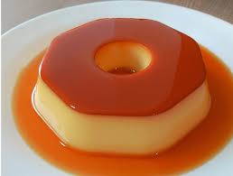
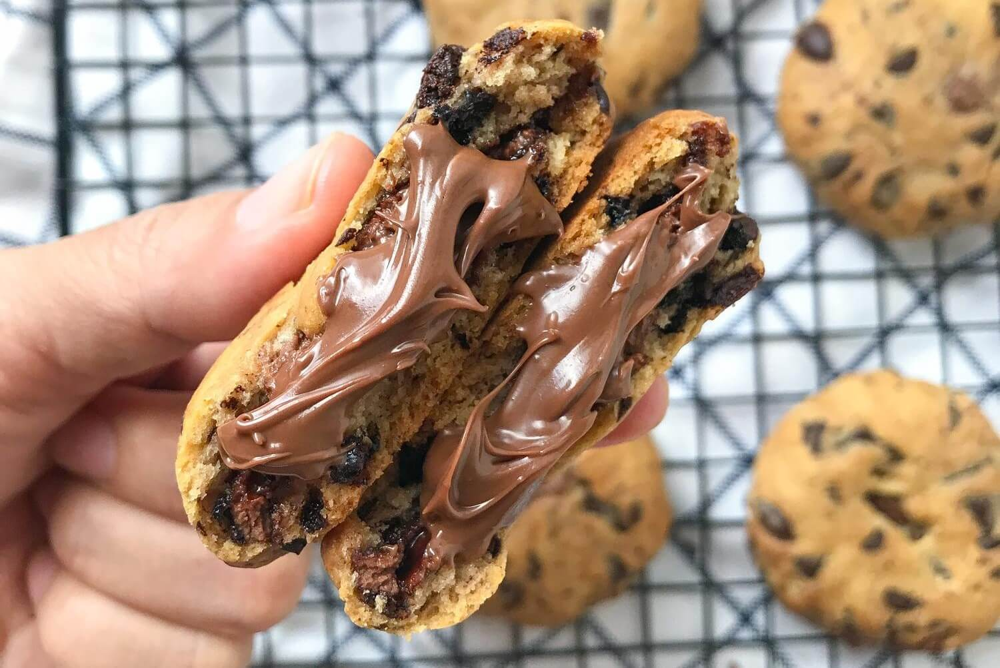
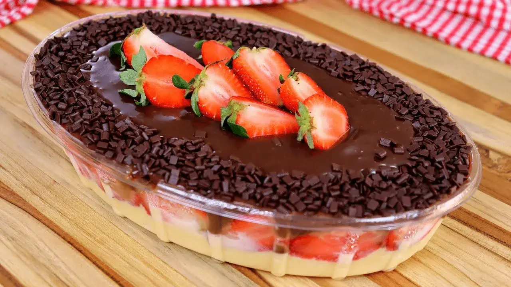

CHEESECAKE DE FRUTAS VERMELHAS

Cremoso na medida certa, com uma base crocante e aquela calda de frutas vermelhas que dá o contraste perfeito
PUDIM
Clássico, lisinho e com bastante calda. Todo mundo ama não tem jeito
COOKIE RECHEADO
Massa macia, casquinha leve e MUITO RECHEIO
BROWNIE

2 em 1, textura que está entre um bolo e uma casquinha como se fosse cookie
BOMBOM DE MORANGO
Morango e chocolate, não tem erro, apenas.
Referências usadas para semantica e doces